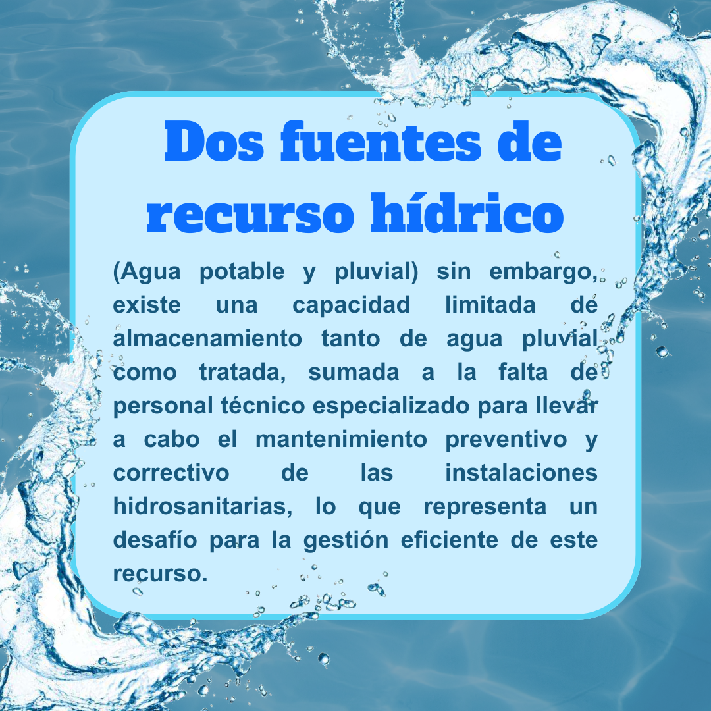

Hacia un uso responsable de los recursos hídricos
El proyecto busca atender una problemática urgente: la gestión eficiente del agua en la UAM Lerma, donde, si bien el consumo actual se mantiene dentro de niveles considerados normales, aún no se han implementado tecnologías clave como hidromedidores que permitan un monitoreo detallado. Esto resulta crítico ante el constante crecimiento de la matrícula estudiantil y las futuras ampliaciones de la infraestructura universitaria, que inevitablemente incrementarán la demanda hídrica.
Predicción de Consumo Futuro
Utilizando modelos matemáticos, como la regresión lineal y polinómica, se proyectó el consumo de agua para el año 2025. Las predicciones indican que el consumo podría aumentar debido al crecimiento de la matrícula y la expansión de la infraestructura universitaria, lo que destaca la urgencia de tomar medidas preventivas desde ahora para evitar futuros problemas de abastecimiento.
Pronóstico de ahorro con hidromedidores
En cuanto a la implementación de hidromedidores ultrasónicos en la Unidad Lerma, se realizó un pronóstico que estima un ahorro significativo en el consumo de agua. La medición precisa por áreas permitirá identificar y corregir fugas de agua, un factor clave en el desperdicio de recursos hídricos, mejorando la eficiencia general. Se estima que esta implementación podría generar un ahorro diario de aproximadamente 200,000 litros de agua, contribuyendo a una reducción considerable de los costos operativos y una gestión más eficiente de los recursos hídricos.
- ¿Cómo podemos cuidar el agua? -
- Establecer un programa de mantenimiento preventivo para las instalaciones hidrosanitarias, asegurando que no haya fugas ni desperdicio de agua.
- Aumentar la instalación de llaves ahorradoras y mingitorios secos en todos los módulos sanitarios para reducir el consumo innecesario de agua.
- Aunque no se cuente con hidromedidores para el agua pluvial, se pueden establecer registros manuales o estimaciones del consumo en diferentes áreas para identificar patrones y áreas de mejora.
- Organizar foros o talleres donde se discutan las mejores prácticas en el uso del agua y se compartan experiencias sobre su conservación.
- Integrar la educación sobre gestión del agua en los programas académicos para sensibilizar a los estudiantes desde su formación.
- Formar un grupo multidisciplinario que supervise y evalúe las acciones relacionadas con la gestión del agua en la universidad.
- Fomentar colaboraciones entre diferentes disciplinas (biología, ingeniería, arte) para diseñar soluciones innovadoras que promuevan la sostenibilidad hídrica.
- Diseñar e implementar sistemas que utilicen agua pluvial para el riego automático de áreas verdes dentro de la universidad.
- Crear un programa de incentivos para reconocer a aquellos estudiantes o grupos que implementen prácticas efectivas de ahorro de agua.
- Invertir en tecnologías que mejoren el tratamiento y almacenamiento del agua pluvial y residual, aumentando su capacidad y eficiencia.
- Establecer alianzas con organizaciones locales e instituciones educativas para compartir recursos y conocimientos sobre gestión sostenible del agua.
- Fomentar proyectos de investigación que aborden problemas específicos relacionados con la gestión del agua en la UAM Lerma, generando soluciones basadas en datos concretos.